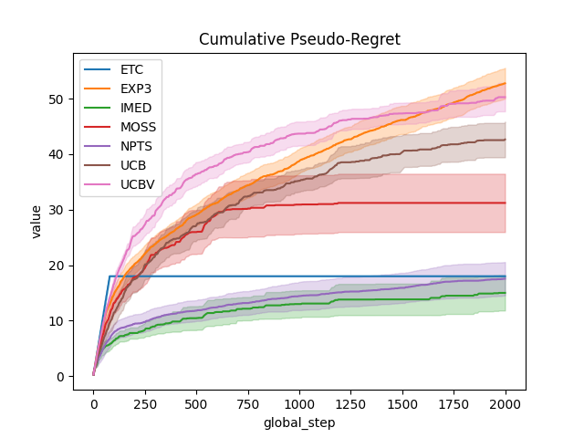
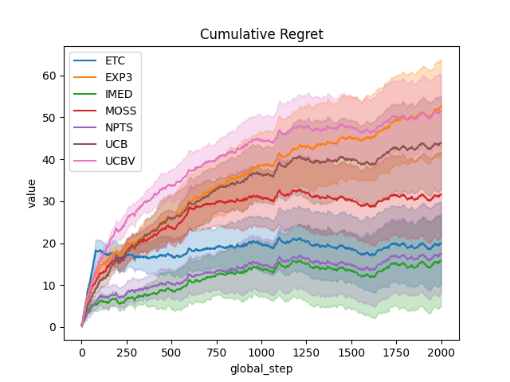
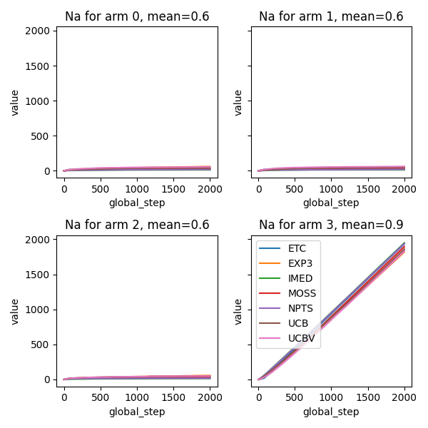

Note
Go to the end to download the full example code
Comparison subplots of various index based bandits algorithms¶
This script Compare several bandits agents and as a sub-product also shows how to use subplots in with plot_writer_data
- 
- 
- 
/home/runner/work/rlberry/rlberry/rlberry/manager/plotting.py:618: UserWarning: No artists with labels found to put in legend. Note that artists whose label start with an underscore are ignored when legend() is called with no argument.
plt.legend()
/home/runner/work/rlberry/rlberry/rlberry/manager/plotting.py:618: UserWarning: No artists with labels found to put in legend. Note that artists whose label start with an underscore are ignored when legend() is called with no argument.
plt.legend()
/home/runner/work/rlberry/rlberry/rlberry/manager/plotting.py:618: UserWarning: No artists with labels found to put in legend. Note that artists whose label start with an underscore are ignored when legend() is called with no argument.
plt.legend()
import numpy as np
import matplotlib.pyplot as plt
from rlberry_research.envs.bandits import BernoulliBandit
from rlberry.manager import ExperimentManager, plot_writer_data
from rlberry_research.agents.bandits import (
IndexAgent,
RandomizedAgent,
makeBoundedIMEDIndex,
makeBoundedMOSSIndex,
makeBoundedNPTSIndex,
makeBoundedUCBIndex,
makeBoundedUCBVIndex,
makeETCIndex,
makeEXP3Index,
)
# Agents definition
# Parameters of the problem
means = np.array([0.6, 0.6, 0.6, 0.9]) # means of the arms
A = len(means)
T = 2000 # Horizon
M = 10 # number of MC simu
# Construction of the experiment
env_ctor = BernoulliBandit
env_kwargs = {"p": means}
class UCBAgent(IndexAgent):
name = "UCB"
def __init__(self, env, **kwargs):
index, _ = makeBoundedUCBIndex()
IndexAgent.__init__(
self, env, index, writer_extra="action_and_reward", **kwargs
)
class UCBVAgent(IndexAgent):
name = "UCBV"
def __init__(self, env, **kwargs):
index, params = makeBoundedUCBVIndex()
IndexAgent.__init__(
self,
env,
index,
writer_extra="action_and_reward",
tracker_params=params,
**kwargs
)
class ETCAgent(IndexAgent):
name = "ETC"
def __init__(self, env, m=20, **kwargs):
index, _ = makeETCIndex(A, m)
IndexAgent.__init__(
self, env, index, writer_extra="action_and_reward", **kwargs
)
class MOSSAgent(IndexAgent):
name = "MOSS"
def __init__(self, env, **kwargs):
index, _ = makeBoundedMOSSIndex(T, A)
IndexAgent.__init__(
self, env, index, writer_extra="action_and_reward", **kwargs
)
class IMEDAgent(IndexAgent):
name = "IMED"
def __init__(self, env, **kwargs):
index, tracker_params = makeBoundedIMEDIndex()
IndexAgent.__init__(
self,
env,
index,
writer_extra="action_and_reward",
tracker_params=tracker_params,
**kwargs
)
class NPTSAgent(IndexAgent):
name = "NPTS"
def __init__(self, env, **kwargs):
index, tracker_params = makeBoundedNPTSIndex()
IndexAgent.__init__(
self,
env,
index,
writer_extra="action_and_reward",
tracker_params=tracker_params,
**kwargs
)
class EXP3Agent(RandomizedAgent):
name = "EXP3"
def __init__(self, env, **kwargs):
prob, tracker_params = makeEXP3Index()
RandomizedAgent.__init__(
self,
env,
prob,
writer_extra="action_and_reward",
tracker_params=tracker_params,
**kwargs
)
Agents_class = [
ETCAgent,
EXP3Agent,
IMEDAgent,
MOSSAgent,
NPTSAgent,
UCBAgent,
UCBVAgent,
]
agents = [
ExperimentManager(
Agent,
(env_ctor, env_kwargs),
fit_budget=T,
n_fit=M,
parallelization="process",
mp_context="fork",
seed=42,
)
for Agent in Agents_class
]
# these parameters should give parallel computing even in notebooks
# Agent training
for agent in agents:
agent.fit()
# Compute and plot regret
def compute_regret(rewards):
return np.cumsum(np.max(means) - rewards)
# Compute and plot (pseudo-)regret
def compute_pseudo_regret(actions):
return np.cumsum(np.max(means) - means[actions.astype(int)])
output = plot_writer_data(
agents,
tag="action",
preprocess_func=compute_pseudo_regret,
title="Cumulative Pseudo-Regret",
linestyles=True,
)
output = plot_writer_data(
agents,
tag="reward",
preprocess_func=compute_regret,
title="Cumulative Regret",
linestyles=True,
)
# Compute and plot number of times each arm was selected
def compute_na(actions, a):
return np.cumsum(actions == a)
fig, axes = plt.subplots(2, 2, sharey=True, figsize=(6, 6))
axes = axes.ravel()
for arm in range(A):
output = plot_writer_data(
agents,
tag="action",
preprocess_func=lambda actions: compute_na(actions, arm),
title="Na for arm " + str(arm) + ", mean=" + str(means[arm]),
ax=axes[arm],
show=False,
linestyles=True,
)
fig.tight_layout()
plt.show()
Total running time of the script: (0 minutes 40.774 seconds)